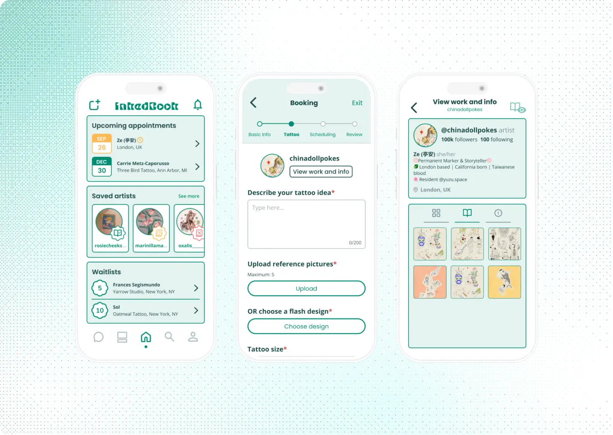

Inkedbook:
Streamlining tattoo artist discovery and scheduling
The Problem
How can we create a centralized platform for tattoo customers, and expedite the tattoo booking process?
Getting tattoos online is more complicated than it should be. Search for an artist on one app, book with them on another, and message them on yet another platform. With all of these steps and artists all over the place, the tattoo finding process is overwhelming.
Over the course of two months, I engaged in conversations with tattoo customers, analyzed people's experiences, and designed Inkedbook to bring my idea of an app for the tattoo community to life.

The Solution
Inkedbook, a centralized community and booking system consolidated into one app.
An idea that stemmed from my Digital Product Design class and extended into a personal project for Shift Creator Space, Inkedbook has the following key features:
Key Features

Stay updated! View your upcoming appointments, booking statuses for saved artists, and waitlist positions.
Browse tattoo artists, designs, and trends through the community with the Explore and Search functions.


Conveniently book an appointment with the tattoo artist within the app.
Communicate directly with the artist in the app through messaging.

Exploring the Problem Space
What apps exist out there for tattoo customers, and what do tattoo customers want?
Going back to the question—How can we create a centralized platform, and expedite the booking process?—I wanted to fill in my knowledge of the current scene in the tattoo community to find out what was needed to address it.
But what information specifically should I look for, and how? I decided on two research methods based on the following reasoning:

Competitive analysis: what's out there?

I analyzed three existing platforms and tools within the tattoo community based on 4 types of criteria:
- Community
- Artist/Studio information
- Booking
- Communication
Examining the features and UI of each platform and how successful they were in fulfilling each area led to the following insights:
Acuity and Vagaro had strong scheduling and booking systems, but failed to provide detailed information on tattoo artists and studios (i.e. policies and designs). While useful for the booking part of the process, they failed to foster communities with the lack of a space for customers to explore artists and tattoo designs.

Acuity and Vagaro's scheduling and booking systems.
While Tattoodo's concept came the closest to encompassing the entire tattoo booking process, it fell short of fostering an environment where artists could be recognized by customers for their work. Tattoodo's format is similar to Pinterest where various artists' designs are presented in an inspiration board layout, which focuses on the designs rather than the artists.

User interviews: what do tattoo customers want?
Wanting to hear directly from users, I interviewed 5 users on their experience with finding and booking tattoo artists online. After using affinity mapping to find themes from the users' responses, I uncovered the three following insights:
It is tedious, discouraging, and confusing when tattoo customers have to navigate through different websites to book an appointment.
Many tattoo customers would use Instagram as a tool to find tattoo artists and view their work.
Communication is primarily conducted over Instagram direct messaging and email, which further extends the spread of platforms in the booking process.
Brainstorming a Solution
How do we help tattoo customers reach their goals?
Drawing from the findings of my research, I created three user stories to help brainstorm features that would best help users achieve their goals. Tattoo customers need:
- 📌 A centralized system to book from artists so they can spend less time navigating multiple platforms and websites.
- 📌 A community that allows them to explore tattoo artists and designs so they can find the tattoo artist/design they want.
- 📌 A centralized platform to communicate with artists.
Based on the user stories, I came up with the following three main features for Inkedbook:
- 🎯 Booking Form
- 🎯 Artist Community
- 🎯 Contact the Artist

User flow: organizing and creating connections between features
Using the three main features as a framework, I utilized a user flow to visualize how the functions of Inkedbook flowed together and are organized. In doing this, I could brainstorm sub-features and how they could overall be connected to help the user.

Sketching: exploring content and layout
Once I had a clearer visualization of how the app would be structured, I started sketching the interfaces to brainstorm the layouts of the screens.


Creating the Solution + Usability Testing
Iterating with a low-fidelity prototype
To create the skeleton of the prototype, I created low-fidelity wireframes in order to assess the functionality and organization of the design.


Usability testing: user feedback during prototype development
While booking the appointment, customers have an option to view the artist's work. The button to perform this action was previously named "View Profile" and the work was laid out in a profile format. To make it clear that this functionality was for users to take a look at the artist's work to inform their own tattoo choices, I changed the button to "View Work" and adopted a photo gallery style for the artist's work.

The option to choose a date was put at the very beginning of the form, which is unconventional and can put unwanted stress on the user. This was for the purpose of letting customers know when artists are available, as many artists open bookings for appointments months ahead. To address this, the date selection was moved to the last page of the form, and the customer can select only the month for their appointment in the beginning instead to get a sense of the artist's general availability.

Final Prototype
Reflections and Next Steps
A valuable insight I took away from this project is the importance of garnering feedback from users during the design process. I also learned to be a bit more open-minded when it came to my designs—not being too attached in the sense that there is always room for improvement. I enjoyed practicing my branding and UI design skills, and learning more about what users want.
Some insights for the future:
While I was able to interview users to learn about their experiences and opinions about the booking process, I wish I utilized more research methods (such as storyboarding or a journey map) to understand the user more as they go through the booking process. At what specific points do users have challenges, and what current actions do they take to book an appointment? It would be useful to explore the booking process step-by-step in this sense.
Although I did sketch out my ideas for InkedBook, I didn't come up with multiple options for each interface. In the future, I'd like to brainstorm more ideas in a shorter amount of time. In doing so, I can have multiple options for features and weigh which ones fulfill users' needs the most.
Thank you for reading! If you have any questions about this project, feel free to email me at bridgit@umich.edu! ✶⋆.˚